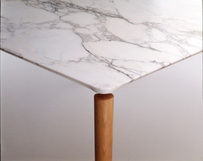
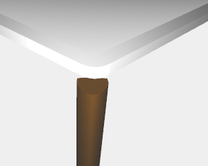
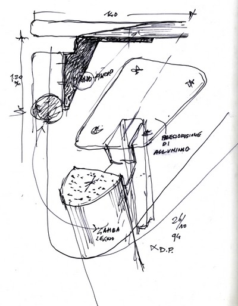
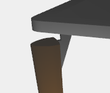

The table can be divided into three parts: the marble slab, hinge and the wooden leg.
|  |  |
The marble slab was constructed by first creating a cuboid and then created the corners and edges.
|  |  |
After have been created, with custon function using another function "curves_union" to create particolar surface, a wooden leg and a hinge, they were incorporated into a structure, that has been quadrupled by turning and translating. In the end all parties have been incorporated in the final structure.